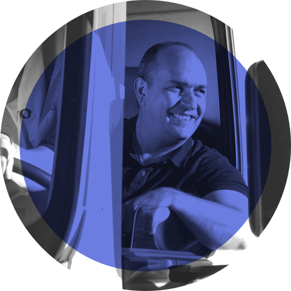

-
Saferlayer
Saferlayer is a free tool that protects your documents with smart, tamper-proof watermarks to prevent identity theft. Our watermarks are exceptionally difficult to remove, even with AI. A key feature of Saferlayer is that it operates entirely within your browser, ensuring your documents are never uploaded to a server.
Visit -
How BB-8 Works
"There were a lot of discussions about how having a CG BB-8 would be so much easier, but we also knew it would be better for the film if it were performed" said director J.J. Abrams when the first trailer for Star Wars Episode VII debuted.
But how was BB-8 actually built? Strangely, the internet didn’t have a clear answer—so a friend and I set out to uncover it ourselves.
The result of our investigation was this site, published in May 2015. It quickly went viral, earning features in Popular Science, Time Magazine , the BBC, and many other media outlets. Oh, and it was even named Side Project of the Summer by Net Magazine.
Visit -

Ontruck: Solving the Unrealistic Times Problem
Ontruck is a platform that enables companies to easily book and track road freight shipments online.
One day, our drivers began reporting that meeting all the scheduled stops on time was often difficult—or even impossible. When we analyzed the data, we discovered that in a significant number of cases, users were requesting pickup and drop-off times that were simply unrealistic.
Here’s how we tackled the problem. -
Doctor 24: From MVP to Scheduled Calls
Doctor24 started as a simple service that let users consult with doctors online—just log in and start a video call with one of our physicians. But as we spoke with users, we realized how much they valued the ability to connect with a doctor they already trusted. At the same time, they loved the immediacy of pushing a button and getting instant care.
Our biggest challenge when designing Scheduled Appointments was striking the perfect balance between familiarity and convenience—giving users the best of both worlds.
Here's how we solved this challenge -
The 10 rules that helped us improve internal communication at Ontruck
At Ontruck, we grew from a small team of 10 sharing a single office to a 160-person team spread across four countries in just three years. Like many fast-growing startups, we faced challenges in maintaining effective internal communication.
Here’s the approach we took to solve it. -
The reasons why we changed the way we hired designers at Ontruck
For a long time, one of the steps in our design hiring process at Ontruck was a take-home exercise. However, as more candidates went through the process, we became increasingly aware of the drawbacks of this approach.
Here's what we learned and how we changed it. -
Beach Boys Legacy
Beach Boys Legacy is my frontend development playground—a passion project dedicated to one of my favorite bands. With a discography spanning over five decades, I found there wasn’t a proper place online to explore their vast catalog, so I built one myself.
This side project helps me keep my frontend skills sharp—and even scored me some backstage passes to Beach Boys and Brian Wilson shows :)
Visit -
NES Mini
Similar to How BB-8 Works, this site is another side project I built using the 3D editor we developed at Verold.
The site is essentially an interactive, enhanced post that tells the fascinating story behind the original 1985 NES.
Visit